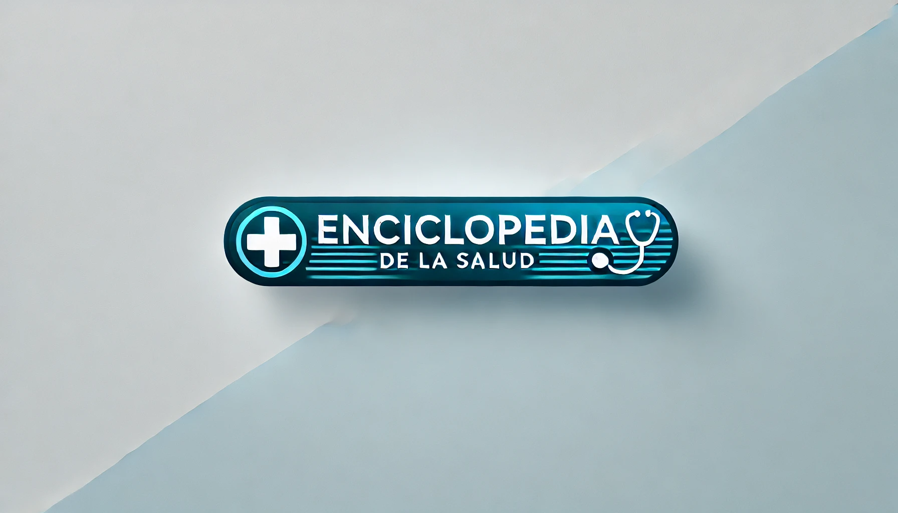

Saltar al contenido principal

Mini Enciclopedia de la Salud
Mapa del Sitio
Temas destacados
Búsqueda de artículos
Encuesta anónima del usuario
Declaración de Accesibilidad
Contacto
Inicio
→
Índice de la Letra V
→
Visión Binocular
Visión Binocular
Descarga este artículo
MKV vídeo en español
MP4 vídeo en español
DOCX transcripción en español
DOCX transcripción en inglés
DOCX transcripción completa en español
PDF transcripción en español
PDF transcripción en inglés
PDF transcripción completa en español
Visión Binocular
Visor local
Visor Amara